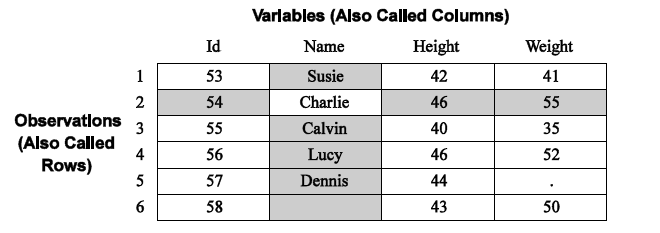

*Copyright @ www.mycsg.in;
What is a computer
A computer is a programmable electronic device that accepts input, processes instructions, and produces output
What is software
Software is a collection of instructions that tells a computer how to work
What is SAS
SAS is an integrated system of software solutions used for data entry, retrieval, management, reporting, and statistical analysis
It can be used to manage data, create reports, perform descriptive analysis, and carry out more advanced statistical procedures
What is data
Data refers to distinct pieces of information collected and stored for a purpose
What is data entry
Data entry is the task of entering or updating data in a computer system
What is data retrieval
Data retrieval is the process of obtaining stored data for use or review
What is data management
Data management is the collection, storage, organisation, and maintenance of data
What is a report
A report is a structured presentation of information, observations, or findings
What is statistics
Statistics is the branch of mathematics concerned with collecting, organising, analysing, interpreting, and presenting data
What is statistical analysis
Statistical analysis is the process of exploring and summarising data to understand patterns, relationships, and differences
How do we use SAS
We provide instructions to SAS through SAS programs
Those instructions tell SAS what the input data is, what analysis to perform, and what kind of result or report is needed
What kind of questions can SAS help us answer
Class example: average height, weight, and age of students in a class
Class example: number of males and females in a class
Cars example: average, minimum, and maximum mileage for each car maker
Cars example: number of models available from each car maker
Clinical trial example: total number of subjects in a study
Clinical trial example: number of subjects in each treatment group
Clinical trial example: number of males and females within each treatment group
How do we provide instructions to SAS
SAS includes its own programming language called SAS language
We provide instructions to SAS in the form of a SAS program written in that language
What is a SAS program
A SAS program is a series of statements that tells SAS what to do
What does a SAS program contain
A SAS program contains one or more instruction sets called steps
SAS executes one step at a time
These steps are broadly classified into DATA steps and PROC steps
What happens when we execute a SAS program
SAS checks whether it understands the submitted instructions
If serious issues are found, execution may stop
Otherwise, SAS completes the requested processing and produces results or output datasets
How does SAS expect data to be organised
SAS expects data to be in tabular form with rows representing observations and columns representing variables
An observation contains the collection of values for one entity such as one student, one car, or one subject
A variable contains the same type of information across observations such as age, sex, or weight
Dataset structure, variables, and observations
Dataset structure, variables, and observations

Create a simple example dataset
This small example illustrates how rows and columns appear in a SAS dataset
Review the output dataset and identify the observations and variables
data class_demo; set sashelp.class(obs=5); run;
Copy Code
View Log
SAS Log
data class_demo; set sashelp.class(obs=5); run; NOTE: There were 5 observations read from the data set SASHELP.CLASS. NOTE: The data set WORK.CLASS_DEMO has 5 observations and 5 variables. NOTE: Compressing data set WORK.CLASS_DEMO increased size by 100.00 percent. Compressed is 2 pages; un-compressed would require 1 pages. NOTE: DATA statement used (Total process time): real time 0.00 seconds cpu time 0.00 seconds
Each row of `class_demo` is one observation
Each column such as `name`, `sex`, `age`, `height`, and `weight` is a variable
View Data
Dataset View